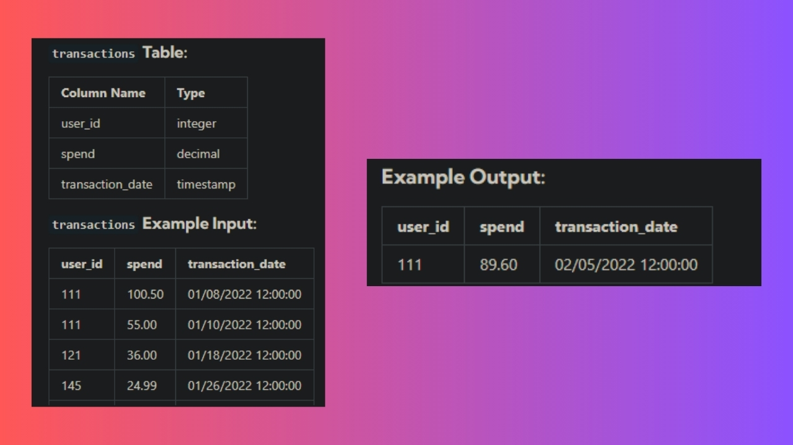

A Common Table Expression (CTE) is a temporary result set that is defined within a SQL query to simplify complex operations. CTEs are created using the WITH keyword. They’re especially useful for organising queries that would otherwise be lengthy or difficult to understand if written all at once. We can think of it like taking a big problem and breaking it down into smaller steps.
Window functions are functions that let you do calculations in SQL across a set of rows (hence the word 'window', means that it performs the operation over a 'window' of rows) that are related to each individual row without grouping them together. Window functions use the OVER clause to define the 'window' of rows for each calculation.
Some Window Functions are -
ROW_NUMBER(), RANK(), DENSE_RANK() etc.
(Note that some aggregate functions like SUM() can be used as Window Functions as well.)
Let us understand these concepts with the help of an actual interview question asked by Uber:
Assume you are given the table below on Uber transactions made by users. Write a query to obtain the third transaction of every user. Output the user id, spend and transaction date (Refer to transactions table and the example output below.)

WITH temp_table AS
(
SELECT user_id, spend, transaction_date,
DENSE_RANK() OVER (PARTITION BY user_id ORDER BY transaction_date) AS ranked_id
FROM transactions
)
SELECT temp_table.user_id, temp_table.spend, temp_table.transaction_date
FROM temp_table
WHERE temp_table.ranked_id = 3;
This query uses a CTE to rank user transactions by date and filter results based on the rank. Here's how it works:
» WITH temp_table (CTE):
The 'WITH' clause creates a temporary result set (CTE) 'temp_table' that assigns a rank to each transaction for every user_id using the DENSE_RANK() window function.
» DENSE_RANK() (Window Function):
This window function assigns ranks starting from 1. In this query, we want to select the third transaction (rank 3) for each user. RANK() could work for users with no tied transactions ( but it’s possible that users could make multiple transactions on the same date. If we used RANK(), any ties in transaction dates would cause skipped ranks), however, DENSE_RANK() is more reliable as it prevents gaps in the ranking, ensuring that the third transaction is always captured.
» PARTITION BY user_id:
This means that the ranking is done separately for each user, creating a ranking for their transactions only.
» ORDER BY transaction_date:
It ensures that the transactions are ranked in the order of the date they occurred. Making sure that the 3rd transaction is indeed the 3rd transaction for the customer.
» The rest of the query (main query) is very simple and involves the use of clauses like SELECT, FROM, and WHERE.
This type of query can be useful in real life scenarios where one would need to analyse the third interaction/transaction of each user. For example, in e-commerce, this might help in understanding customer loyalty by examining the user's behavior after their third purchase.
This question was obtained from this excellent website created by one of my mentors. Nick Singh, here's the link to the site:
It contains many actual interview questions asked by prominent companies like Uber, Facebook, Tesla etc. It has helped me a lot during my data analytics journey.
Happy Learning!